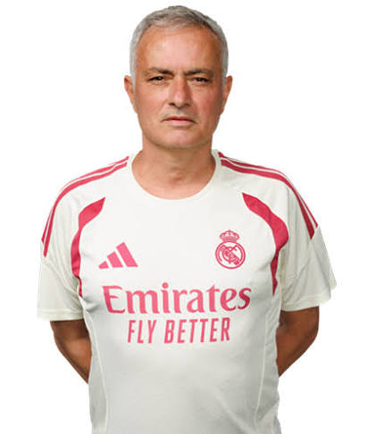

José Mourinho
Role: Head Coach
Nationality: Portugal
Age: 63
Appointed: June 2026
Preferred Formation: 4-2-3-1

Biography & Management Career
José Mourinho, famously known as "The Special One", is a legendary Portuguese football manager and former player widely regarded as one of the most successful managers in football history. Having previously led Los Blancos from 2010 to 2013, Mourinho made his blockbuster return to Real Madrid on a three-year deal, taking charge of the squad to pursue further elite titles.
Honours with Real Madrid
- 🏆 La Liga (1)
- 🏆 Copa del Rey (1)
- 🏆 Supercopa de España (1)